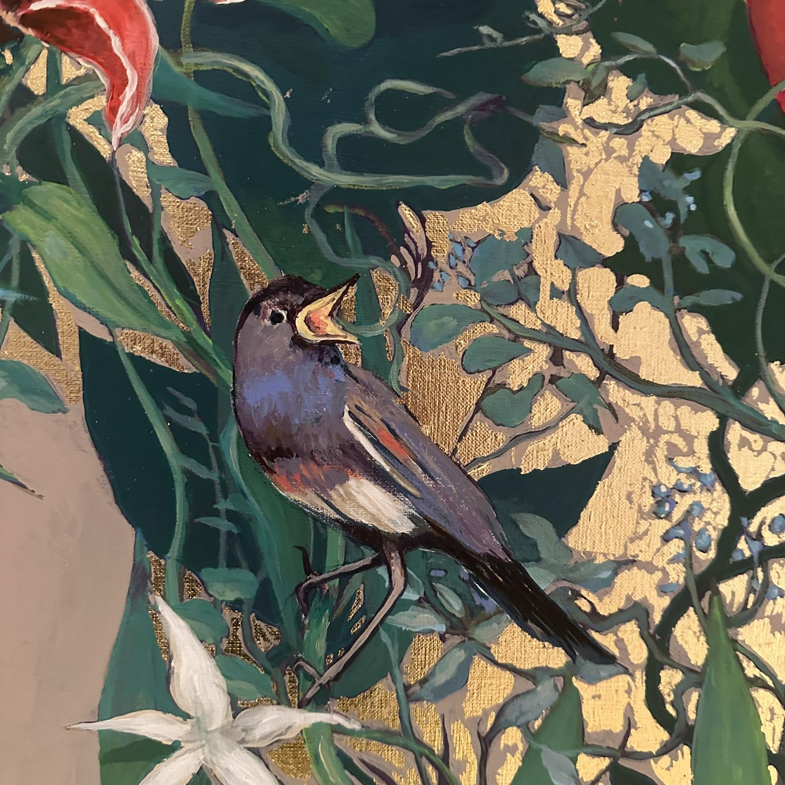

Somatic Therapy

Psycho-Corporal Therapy
Atmaram, Brussels
I trained in psycho-corporal therapy at Atmaram in Brussels, a four-year curriculum built around EMTE — Énergétique, Massage, Thérapie, Eidétique. Alongside the clinical practice, it covers anatomy, breathwork, bioenergetics, Gestalt, and family and systemic therapy, taught through a mix of theory, supervised practice and individual sessions.

The theoretical framework draws heavily on Wilhelm Reich's theory of character structures and "body armor" — how unresolved emotion settles into posture, breath and muscular tension — alongside Carl Jung's understanding of the unconscious, where what surfaces in a session is treated as material moving toward integration rather than a symptom to correct.